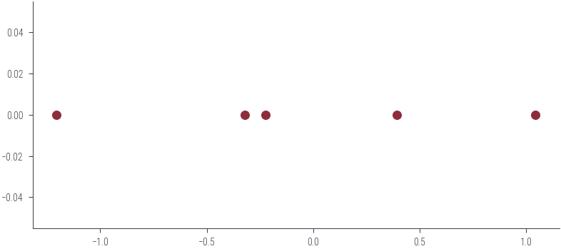
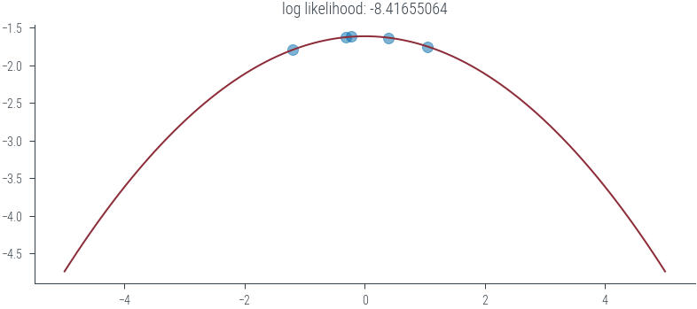
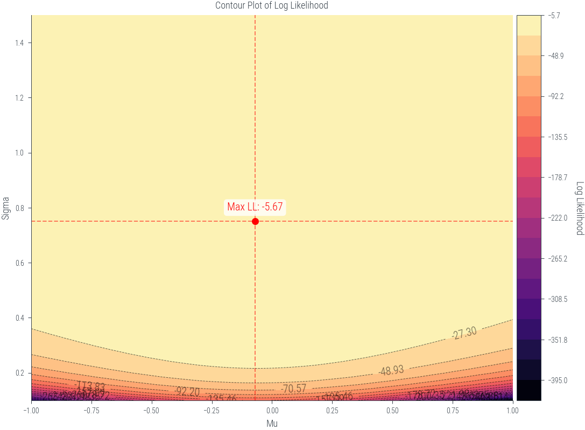
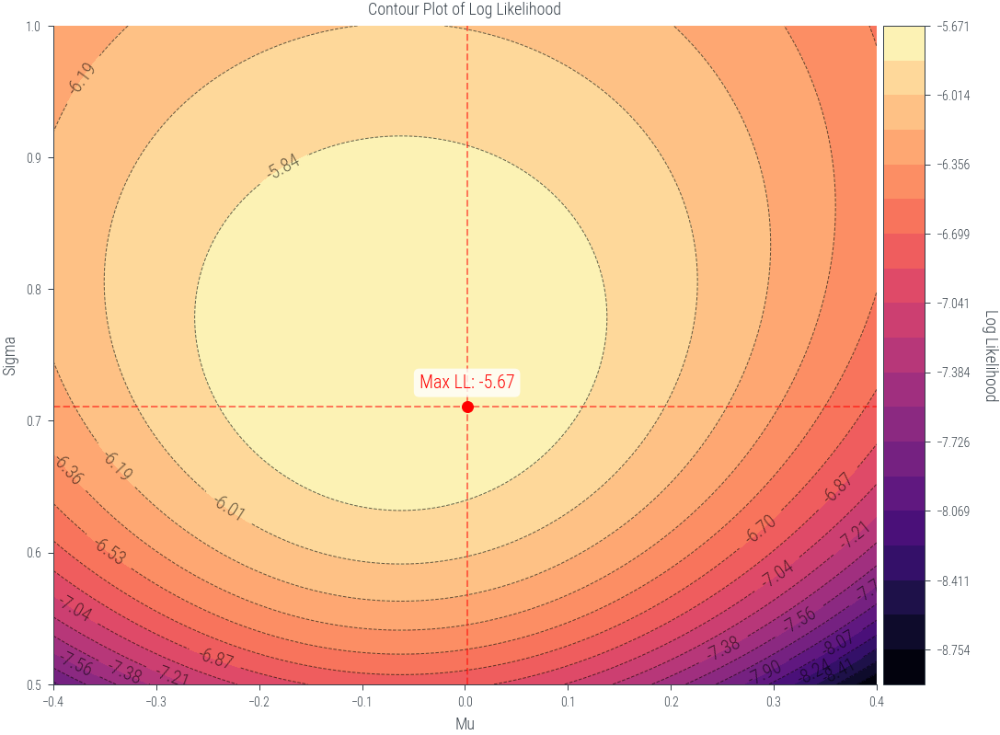

import torch
import numpy as np
import matplotlib.pyplot as plt
import pandas as pd
import matplotlib.pyplot as plt
%matplotlib inline
# Retina display
%config InlineBackend.figure_format = 'retina'from tueplots import bundles
plt.rcParams.update(bundles.beamer_moml())
# Also add despine to the bundle using rcParams
plt.rcParams['axes.spines.right'] = False
plt.rcParams['axes.spines.top'] = False
# Increase font size to match Beamer template
plt.rcParams['font.size'] = 16
# Make background transparent
plt.rcParams['figure.facecolor'] = 'none'c1 = torch.distributions.Normal(80, 10)
c2 = torch.distributions.Normal(70, 10)
c3 = torch.distributions.Normal(90, 5)# Plot the distributions
x = torch.linspace(0, 105, 1000)
plt.plot(x, c1.log_prob(x).exp(), label='C1')
plt.plot(x, c2.log_prob(x).exp(), label='C2')
plt.plot(x, c3.log_prob(x).exp(), label='C3')
# Fill the area under the curve
plt.fill_between(x, c1.log_prob(x).exp(), alpha=0.2)
plt.fill_between(x, c2.log_prob(x).exp(), alpha=0.2)
plt.fill_between(x, c3.log_prob(x).exp(), alpha=0.2)
plt.xlabel('Marks')
plt.ylabel('Probability')
plt.legend(title='Class')
plt.savefig('../figures/mle/mle-example.pdf', bbox_inches='tight')
# Vertical line at x = 85
marks = torch.tensor([82.])
plt.axvline(marks.item(), color='k', linestyle='--', lw=2)
# Draw horizontal line to show the probability at x = 85
plt.hlines(c1.log_prob(marks).exp(), 0, marks.item(), color='C0', linestyle='--', lw=2)
plt.hlines(c2.log_prob(marks).exp(), 0, marks.item(), color='C1', linestyle='--', lw=2)
plt.hlines(c3.log_prob(marks).exp(), 0, marks.item(), color='C2', linestyle='--', lw=2)
plt.savefig('../figures/mle/mle-example-2.pdf', bbox_inches='tight')
obs = torch.tensor([20.0])
sigma = torch.tensor([1.0])
# Plot the likelihood
mus = torch.linspace(0, 40, 1000)
plt.plot(mus, torch.distributions.Normal(mus, sigma).log_prob(obs).exp())
plt.xlabel(r'Parameter ($\mu$)')
plt.ylabel(r'Likelihood $p(x = 20|\mu$)')Text(0, 0.5, 'Likelihood $p(x = 20|\\mu$)')findfont: Font family ['cursive'] not found. Falling back to DejaVu Sans.
findfont: Generic family 'cursive' not found because none of the following families were found: Apple Chancery, Textile, Zapf Chancery, Sand, Script MT, Felipa, Comic Neue, Comic Sans MS, cursivefrom ipywidgets import interact, interactive, fixed, interact_manual
import ipywidgets as widgets# Interactive plot showing fitting normal distribution of varying mu to one data point
def plot_norm(mu):
mu = torch.tensor(mu)
sigma = torch.tensor(1.0)
x = torch.tensor(20.0)
n = torch.distributions.Normal(mu, sigma)
x_lin = torch.linspace(0, 40, 500)
y_lin = n.log_prob(x_lin).exp()
likelihood = n.log_prob(x).exp()
plt.plot(x_lin, y_lin, label=rf"$\mathcal{{N}}({mu.item():0.4f}, 1)$")
plt.legend()
plt.title(f"Likelihood={likelihood:.4f}")
plt.ylim(0, 0.5)
plt.fill_between(x_lin, y_lin, alpha=0.2)
plt.axvline(x=x, color="black", linestyle="--")
plt.axhline(y=likelihood, color="black", linestyle="--")
#plot_norm(20)
interact(plot_norm, mu=(0, 30, 0.1))<function __main__.plot_norm(mu)># Interactive plot showing fitting normal distribution of varying mu to one data point
def plot_norm_log(mu):
mu = torch.tensor(mu)
sigma = torch.tensor(1.0)
x = torch.tensor(20.0)
n = torch.distributions.Normal(mu, sigma)
x_lin = torch.linspace(0, 40, 500)
fig, ax = plt.subplots(nrows=2, sharex=True)
y_log_lin = n.log_prob(x_lin)
y_lin = y_log_lin.exp()
ll = n.log_prob(x)
likelihood = ll.exp()
ax[0].plot(x_lin, y_lin, label=rf"$\mathcal{{N}}({mu.item():0.4f}, 1)$")
#plt.legend()
ax[0].set_title(f"Likelihood={likelihood:.4f}")
ax[0].set_ylim(0, 0.5)
ax[0].fill_between(x_lin, y_lin, alpha=0.2)
ax[1].plot(x_lin, y_log_lin, label=rf"$\mathcal{{N}}({mu.item():0.4f}, 1)$")
ax[1].set_title(f"Log Likelihood={ll:.4f}")
ax[1].set_ylim(-500, 20)
ax[0].axvline(x=x, color="black", linestyle="--")
ax[0].axhline(y=likelihood, color="black", linestyle="--")
ax[1].axvline(x=x, color="black", linestyle="--")
ax[1].axhline(y=ll, color="black", linestyle="--")
#plot_norm_log(10)
interact(plot_norm_log, mu=(0, 30, 0.1))<function __main__.plot_norm_log(mu)># Plot the distributions
def plot_class(class_num):
x = torch.linspace(0, 105, 1000)
dist = [c1, c2, c3][class_num-1]
plt.plot(x, dist.log_prob(x).exp(), label=f'C{class_num}')
plt.fill_between(x, dist.log_prob(x).exp(), alpha=0.2)
plt.xlabel('Marks')
plt.ylabel('Probability')
#plt.legend(title='Class')
#plt.savefig('../figures/mle/mle-example.pdf', bbox_inches='tight')
# Vertical line at x = 82
marks = torch.tensor([82., 72.0])
for mark in marks:
plt.axvline(mark.item(), color='k', linestyle='--', lw=2)
plt.hlines(dist.log_prob(mark).exp(), 0, mark.item(), color='C0', linestyle='--', lw=2, label=f"P({mark.item()}|Class ={dist.log_prob(mark).exp().item():0.4f}")
#plt.hlines(c2.log_prob(mark).exp(), 0, mark.item(), color='C1', linestyle='--', lw=2)
#plt.hlines(c3.log_prob(mark).exp(), 0, mark.item(), color='C2', linestyle='--', lw=2)
#plt.savefig('../figures/mle/mle-example-2.pdf', bbox_inches='tight')
plt.legend()
#plt.savefig("..")
plot_class(1)plot_class(2)plot_class(3)#
s1 = torch.tensor([82.0])
s2 = torch.tensor([72.0])
p_s1_c1 = c1.log_prob(s1).exp()
p_s1_c2 = c2.log_prob(s1).exp()
p_s1_c3 = c3.log_prob(s1).exp()
p_s2_c1 = c1.log_prob(s2).exp()
p_s2_c2 = c2.log_prob(s2).exp()
p_s2_c3 = c3.log_prob(s2).exp()
# Create dataframe
df = pd.DataFrame({
'Class': ['C1', 'C2', 'C3'],
'Student 1 (82)': [p_s1_c1.item(), p_s1_c2.item(), p_s1_c3.item()],
'Student 2 (72)': [p_s2_c1.item(), p_s2_c2.item(), p_s2_c3.item()]
})
df = df.set_index('Class')
df| Student 1 (82) | Student 2 (72) | |
|---|---|---|
| Class | ||
| C1 | 0.039104 | 0.028969 |
| C2 | 0.019419 | 0.039104 |
| C3 | 0.022184 | 0.000122 |
df.plot(kind='bar', rot=0)<AxesSubplot:xlabel='Class'># Multiply the probabilities
df.aggregate('prod', axis=1)Class
C1 0.001133
C2 0.000759
C3 0.000003
dtype: float64df.aggregate('prod', axis=1).plot(kind='bar', rot=0)<AxesSubplot:xlabel='Class'># Create a slider to change s1 and s2 marks and plot the likelihood
def plot_likelihood(s1, s2, scale='log'):
s1 = torch.tensor([s1])
s2 = torch.tensor([s2])
p_s1_c1 = c1.log_prob(s1)
p_s1_c2 = c2.log_prob(s1)
p_s1_c3 = c3.log_prob(s1)
p_s2_c1 = c1.log_prob(s2)
p_s2_c2 = c2.log_prob(s2)
p_s2_c3 = c3.log_prob(s2)
# Create dataframe
df = pd.DataFrame({
'Class': ['C1', 'C2', 'C3'],
f'Student 1 ({s1.item()})': [p_s1_c1.item(), p_s1_c2.item(), p_s1_c3.item()],
f'Student 2 ({s2.item()})': [p_s2_c1.item(), p_s2_c2.item(), p_s2_c3.item()]
})
df = df.set_index('Class')
if scale!='log':
df = df.apply(np.exp)
df.plot(kind='bar', rot=0)
plt.ylabel('Probability')
plt.xlabel('Class')
if scale=='log':
plt.ylabel('Log Probability')
#plt.yscale('log')
plot_likelihood(80, 72, scale='linear')
plot_likelihood(80, 72, scale='log')# Interactive plot
interact(plot_likelihood, s1=(0, 100), s2=(0, 100), scale=['linear', 'log'])<function __main__.plot_likelihood(s1, s2, scale='log')># Let us now consider some N points from a univariate Gaussian distribution with mean 0 and variance 1.
N = 5
torch.manual_seed(2)
samples = torch.distributions.Normal(0, 1).sample((N,))
samplestensor([ 0.3923, -0.2236, -0.3195, -1.2050, 1.0445])plt.scatter(samples, np.zeros_like(samples))<matplotlib.collections.PathCollection at 0x7f5e96e106a0>
def ll(mu, sigma):
mu = torch.tensor(mu)
sigma = torch.tensor(sigma)
dist = torch.distributions.Normal(mu, sigma)
loglik = dist.log_prob(samples).sum()
return dist, loglik
def plot_normal(mu, sigma):
xs = torch.linspace(-5, 5, 100)
dist, loglik = ll(mu, sigma)
ys_log = dist.log_prob(xs)
plt.plot(xs, ys_log)
plt.scatter(samples, dist.log_prob(samples), color='C3', alpha=0.5)
plt.title(f'log likelihood: {loglik:.8f}')
plot_normal(0, 2)
#plt.ylim(-1.7, -1.6)
interact(plot_normal, mu=(-3.0, 3.0), sigma=(0.1, 10))<function __main__.plot_normal(mu, sigma)>def get_lls(mus, sigmas):
lls = torch.zeros((len(mus), len(sigmas)))
for i, mu in enumerate(mus):
for j, sigma in enumerate(sigmas):
lls[i, j] = ll(mu, sigma)[1]
return lls
mus = torch.linspace(-1, 1, 100)
sigmas = torch.linspace(0.1, 1.5, 100)
lls = get_lls(mus, sigmas)/tmp/ipykernel_302139/3787141935.py:2: UserWarning: To copy construct from a tensor, it is recommended to use sourceTensor.clone().detach() or sourceTensor.clone().detach().requires_grad_(True), rather than torch.tensor(sourceTensor).
mu = torch.tensor(mu)
/tmp/ipykernel_302139/3787141935.py:3: UserWarning: To copy construct from a tensor, it is recommended to use sourceTensor.clone().detach() or sourceTensor.clone().detach().requires_grad_(True), rather than torch.tensor(sourceTensor).
sigma = torch.tensor(sigma)from mpl_toolkits.axes_grid1 import make_axes_locatable
def plot_lls(mus, sigmas, lls):
fig, ax1 = plt.subplots(figsize=(8, 6))
X, Y = np.meshgrid(mus, sigmas)
max_indices = np.unravel_index(np.argmax(lls), lls.shape)
max_mu = mus[max_indices[1]]
max_sigma = sigmas[max_indices[0]]
max_loglik = lls[max_indices]
# Define levels with increasing granularity
levels_low = np.linspace(lls.min(), max_loglik, 20)
levels_high = np.linspace(max_loglik + 0.001, lls.max(), 10) # Adding a small value to prevent duplicates
levels = levels_low
# Plot the contour filled plot
contour = ax1.contourf(X, Y, lls.T, levels=levels, cmap='magma')
# Plot the contour lines
contour_lines = ax1.contour(X, Y, lls.T, levels=levels, colors='black', linewidths=0.5, alpha=0.6)
# Add contour labels
ax1.clabel(contour_lines, inline=True, fontsize=10, colors='black', fmt='%1.2f')
ax1.set_xlabel('Mu')
ax1.set_ylabel('Sigma')
ax1.set_title('Contour Plot of Log Likelihood')
# Add maximum log likelihood point as scatter on the contour plot
ax1.scatter([max_mu], [max_sigma], color='red', marker='o', label='Maximum Log Likelihood')
ax1.annotate(f'Max LL: {max_loglik:.2f}', (max_mu, max_sigma), textcoords="offset points", xytext=(0,10), ha='center', fontsize=10, color='red', bbox=dict(facecolor='white', alpha=0.8, edgecolor='none', boxstyle='round,pad=0.3'))
ax1.axvline(max_mu, color='red', linestyle='--', alpha=0.5)
ax1.axhline(max_sigma, color='red', linestyle='--', alpha=0.5)
# Create colorbar outside the plot
divider = make_axes_locatable(ax1)
cax = divider.append_axes("right", size="5%", pad=0.05)
cbar = plt.colorbar(contour, cax=cax)
cbar.set_label('Log Likelihood', rotation=270, labelpad=15)
plt.tight_layout()
plt.show()
plot_lls(mus, sigmas, lls)/tmp/ipykernel_302139/1128417763.py:44: UserWarning: This figure was using constrained_layout, but that is incompatible with subplots_adjust and/or tight_layout; disabling constrained_layout.
plt.tight_layout()
samples.mean(), samples.std(correction=0)(tensor(-0.0623), tensor(0.7523))mus = torch.linspace(-0.4, 0.4, 200)
sigmas = torch.linspace(0.5, 1.0,200)
lls = get_lls(mus, sigmas)
plot_lls(mus, sigmas, lls)/tmp/ipykernel_302139/3787141935.py:2: UserWarning: To copy construct from a tensor, it is recommended to use sourceTensor.clone().detach() or sourceTensor.clone().detach().requires_grad_(True), rather than torch.tensor(sourceTensor).
mu = torch.tensor(mu)
/tmp/ipykernel_302139/3787141935.py:3: UserWarning: To copy construct from a tensor, it is recommended to use sourceTensor.clone().detach() or sourceTensor.clone().detach().requires_grad_(True), rather than torch.tensor(sourceTensor).
sigma = torch.tensor(sigma)
/tmp/ipykernel_302139/1128417763.py:44: UserWarning: This figure was using constrained_layout, but that is incompatible with subplots_adjust and/or tight_layout; disabling constrained_layout.
plt.tight_layout()